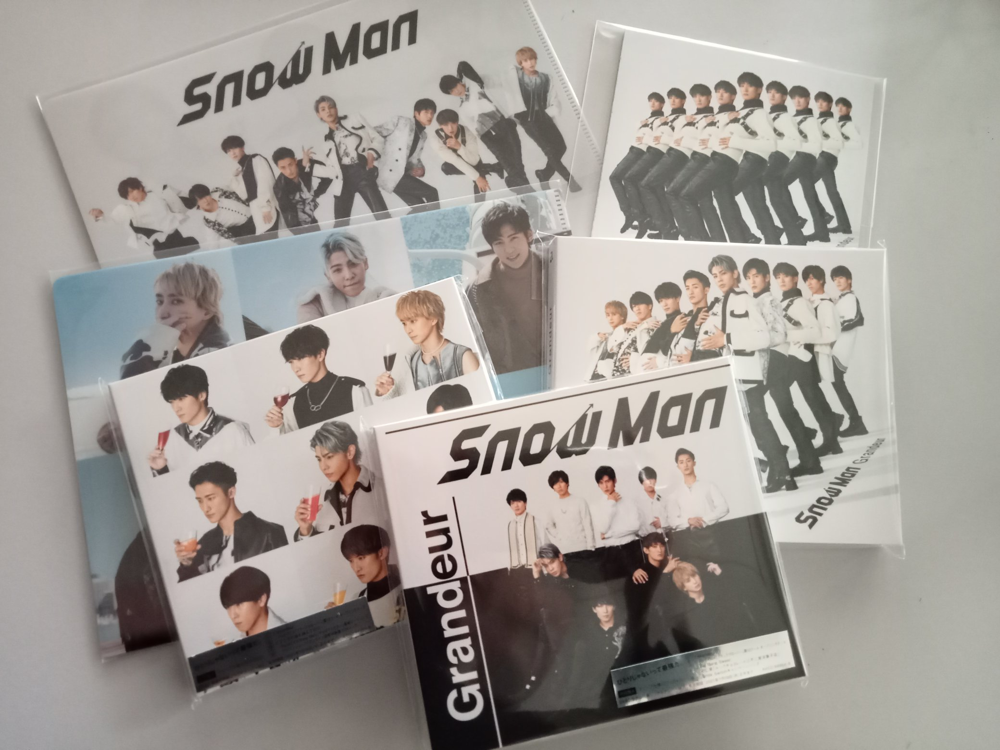
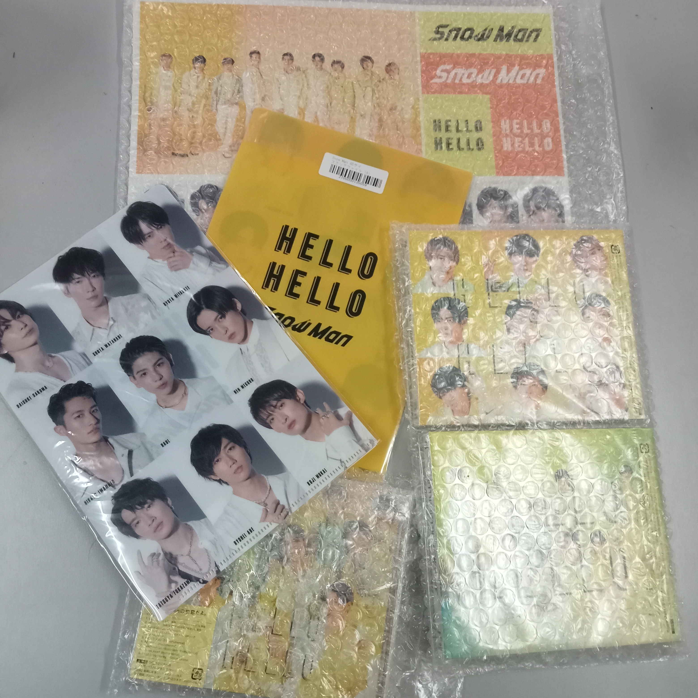
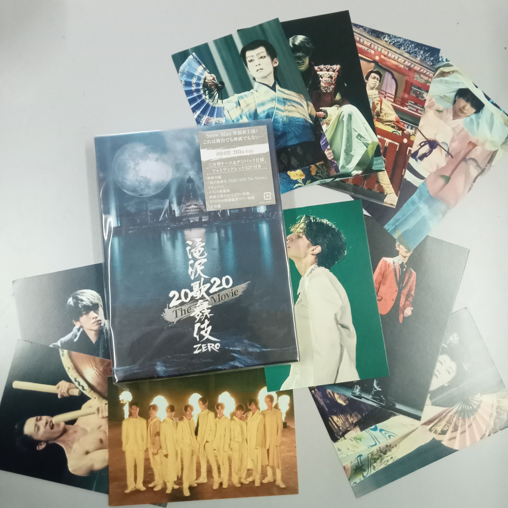

I love to collect albums and DVD. My first album that I collected was in January 2021.
I started to listen Japanese songs. So I decided to buy the albums as a memorable item.
I also started to buy DVD about Kabuki. A Traditional Japanese Culture DVD so I can learn more about them, about Japan overall not just Music.
It have been one year and half since I started to collect my first CD.
In the future, I will buy more Albums and DVD.
I want to a Collecter